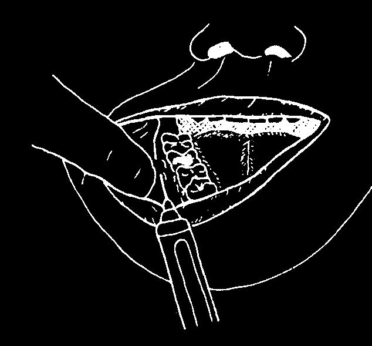
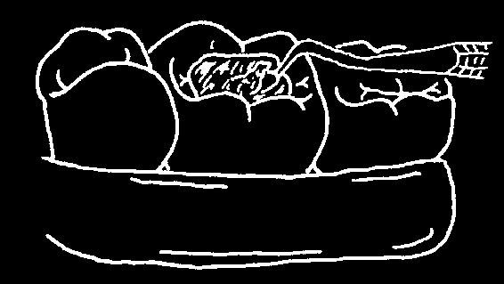
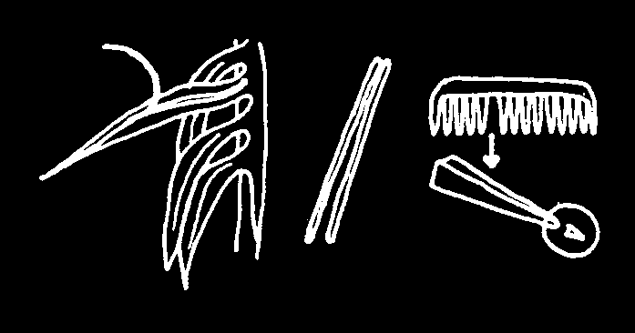
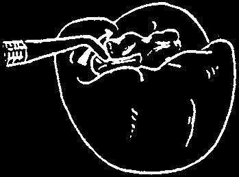
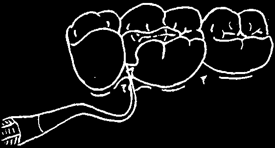
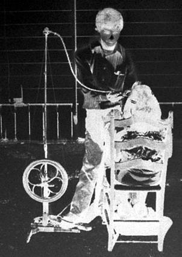
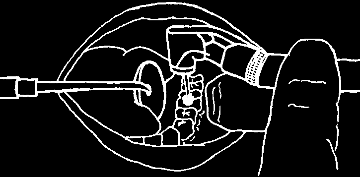
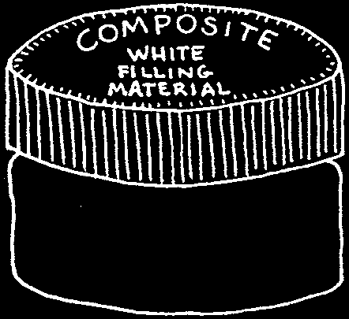

Injecting the Lower Teeth
When you block the nerve, it affects all of the teeth as well as gums on that side. However, it takes practice to do this successfully. Ask an experienced dental worker to help you learn how to give this injection properly.
Stand in such a way that you can see clearly where you need to inject. Ask the person to open wide.
1. First feel for the place to be injected.
Put your thumb beside the last molar tooth. (Wash your hands first!
See page 86.) Feel the jawbone as it turns up towards the head. Rest your thumb in the depression there.
2. Press against the skin with the end of your thumb.
The skin forms a 'v’ shape. Your needle must go into the 'v’.
Hold the syringe on top of tooth number 4 and aim the needle at the 'v’.
Push the needle in until it hits the jawbone, (about ¾ of the length of a long needle). Pull back on the plunger of the aspirating syringe to check for blood (page 138).
Inject 1.5 ml of local anesthetic (¾ of a cartridge).
Try to feel your way: If you hit bone too early, pull the needle part way out and move it over so that it points more toward the back of the mouth. Try again.
If you do not hit bone, the needle is too far back. Pull it part way out, and point it more toward the front. Push it in again.


3. Give a second injection BESIDE the back teeth.
If you are going to fill or remove a back tooth, inject beside that tooth, where the cheek joins the gum.
Inject.5 ml of local anesthetic
(¼ of a cartridge).
This injection is not needed for front teeth. It is enough to block the main nerve.
4. Wait 5 minutes for the tooth to become numb.
Take time with children
1. Put some topical anesthetic on the gum before you inject. But be sure the gums are dry in that place. If you wipe the gum with cotton, the topical anesthetic will stay on longer. Give the anesthetic time to work: wait a minute before injecting.
If you do not have topical anesthetic, try using pressure.
You can use 'pressure anesthetia’
whenever you have to give an injection in a sensitive place, like the roof of the mouth.
Wind some cotton around the end of a match-stick. Press firmly for a minute behind the bad, tooth. Then inject quickly into the depression that formed where you pressed.
2. Be sure the anesthetic is warm when you inject it. Hold the cartridge or bottle in your hands for a few minutes before you use it.
3. Use a new, sharp needle.
4. Have someone pass you the syringe out of sight of the child. Then the child will not have to look at it and be frightened.
5. Be ready to stop the child from grabbing the syringe.
6. Inject the anesthetic slowly. Do not hurry. A too-quick injection can cause sudden pressure, which hurts and frightens the child.

AFTER YOU GIVE AN INJECTION
Before you begin treatment, test the tooth and gums to be sure that they are numb. Wait 5 minutes for the anesthetic to start working. Ask the person how his lips feel—they should feel 'heavy’ or numb. Then test the area.
Poke the gums between the teeth with a clean probe.
Watch the person’s eyes—you will see if you are hurting. If the person still feels pain, stop. Think about your injection technique, and inject again.
After you finish treatment, always talk to the person about what you have done. Tell the person what to expect, and how to be careful with the numb area of the mouth:
• The area will feel normal again in about 1 hour.
• Do not bite or scratch the area while there is no feeling.
• Do not drink anything hot. It can burn the skin inside the mouth.
With a child, always place a ball of cotton between the teeth on the side where you injected. The child should leave it there for 2 hours, until the area feels normal again. Explain this to the mother, and give her a bit of extra cotton to take home. It is much better for the child to chew cotton instead of the numb lip or cheek!
Try not to hurt anyone. You can treat a bad tooth easier, faster, and without pain if you inject local anesthetic slowly and carefully into the right place.

CHAPTER
Cement Fillings
When someone’s tooth hurts, you do not always need to take it out. There may be a way to treat it and keep it. Always ask yourself whether a bad tooth really needs to come out.
This chapter is about filling cavities.
Cavities are the holes that tooth decay makes in the teeth.
From this chapter, you can learn:
• When to fill the cavity, or when to take out the tooth.
• How to place a temporary filling.
WHEN NOT TO PLACE A FILLING
Do not fill a cavity if you think there is an abscess in the tooth. Look for these signs of an abscess:
• The face is swollen.
• There is a gum bubble (page 74)
near the root of the tooth.
• The tooth hurts constantly, even when the person tries to sleep.
• The tooth hurts sharply when you tap it.
An abscess occurs when germs from tooth decay start an infection on the inside of the tooth. If you cover up an abscess with filling material, it will make the problem worse. Pressure builds up inside the filled tooth, causing even more pain and swelling.
If a tooth has an abscess, take it out (see the next chapter), unless you can give special nerve treatment (root canal treatment).

WHEN TO PLACE A FILLING
You can fill a cavity if the tooth does not have an abscess. There is probably not yet an abscess if:
• there is no swelling of the face or gums near the bad tooth.
• the tooth hurts only once in a while — for example, if it hurts only after food or drink, or when breathing cold air.
• the tooth feels the same as the others when you tap against it.
These signs mean that the decay is deep enough for the nerve to feel temperature changes, but not near enough to the nerve to be infected. So there is not an abscess. You can save the tooth by filling the cavity as soon as possible.
WHAT A fILLING CAN DO
A filling can help a person in three ways:
• It stops food, air, and water from entering the cavity. This will stop much discomfort and pain.
• It stops the decay from growing deeper. This can prevent a tooth abscess.
• It can save the tooth, so the person can use it for many more years.
TWO KINDS OF FILLINGS
A permanent filling is made to last for many years. To place one requires special equipment and skills. An experienced dental worker can shape the cavity with a dental drill so it can hold the filling material better (see pages
151–152). Or, a dental worker trained in Atraumatic Restorative Treatment
(ART) can fill the cavity with a sticky material called glass-ionomer.
A cement filling is a temporary filling. It is meant to last only for a few months. It helps the person feel more comfortable until it is possible to get a permanent filling.
Replace a temporary filling with a permanent filling as soon as possible.
This chapter shows how to place cement fillings only, for most readers do not have the expensive equipment needed to make permanent fillings.
But remember that many people can benefit from the extra time that a temporary filling gives them before they get a permanent filling.
A cement filling is often the first step to saving a tooth.


THE INSTRUMENTS AND
FILLING MATERIAL YOU NEED
In many places, government medical stores can provide most of the instruments as well as cement filling material. If this is not possible, a dentist may be able to help you to order what you need.
Instruments
Most dental instruments look alike, but the small end of each instrument is shaped to do a special task. Try to get instruments similar to these and keep them in a kit.
OR tweezers spoon filling tool mixing tool mirror probe
(explorer)
(cotton pliers)
(spoon excavator)
(filling instrument)
(cement spatula)
Some instruments have more than one name. The second one, in (), is the proper name. Use the proper name when you order.
Cement Filling Material
Many companies make temporary filling material. The names on the packages are different. This makes it hard to know which one to order.
However, the basic material of each product is the same—zinc oxide and oil of cloves (eugenol). To save money, order these two main ingredients in bulk, instead of an expensive kind of cement filling material.
Oil of cloves is a liquid.
Zinc oxide is a powder.
You may be able to buy a special kind of zinc oxide powder called I.R.M.
(Intermediate Restorative Material). Fillings with I.R.M. are stronger and harder, so they last longer. But it is more expensive than zinc oxide.


HOW TO PLACE THE CEMENT FILLING
Lay out on a clean cloth:
your syringe, needle, oil of cloves and local anesthetic
(eugenol) and
(in case a tooth hurts)
zinc oxide
Your instruments:
lots of cotton:
mirror, probe, cotton rolls, tweezers, spoon, gauze, or filling tool, cotton wool mixing tool smooth glass to mix cement
To place a cement filling, follow these 6 steps (pages 146–150):
1. Keep the cavity dry.
2. Lift out some, but not all, of the soft decay. (If the tooth hurts, inject local anesthetic.)
3. Mix the cement.
4. Press the cement into the cavity.
5. Remove the extra cement from around the cavity and the tooth.
6. Explain what you are doing to the person.
1. Keep the cavity dry. The cavity and the area around it must be dry so you can see what you are doing. Just as important, cement stays longer inside a dry cavity.
Place cotton between the cheek and gums to keep the area dry. Put some cotton under the tongue when you work on a lower tooth.
Use whatever kind of cotton you have: gauze, wool, or even rolls.
Change the cotton whenever it becomes wet.
Keep the cavity dry while you work.
Wipe the inside of it every now and then with a bit of cotton.
Then leave a piece of cotton inside the cavity while you mix the cement.




2. Lift out some of the decay. You do not need to remove all of the decay on the bottom of the cavity. You can leave some, as long as you cover it with cement. If you try to dig out all of the decay, you might touch the nerve. Try to cover the decay so it stops growing.
However, you must remove all of the decay from the edge of the cavity. Otherwise, germs and food can go between the cement and the cavity and keep the decay growing inside.
Scrape clean the walls and the edge of the cavity. If you find that the edge is thin and weak, break it deliberately with the end of your instrument. That makes for stronger sides to hold onto the cement.
Use the spoon tool and lift out soft decay from inside the cavity. Do not go too deep. Make the cavity just deep enough to give thickness and strength to the cement. If the tooth hurts when you do this, stop and inject some local anesthetic. Use cotton gauze to collect the bits of decay so that the person does not swallow them.
Use your mirror and look closely around the edges of the cavity for decay that you may have missed. Put some cotton inside the cavity and leave it there while you mix the cement.
3. Mix the cement on a piece of smooth glass. Place separately onto the glass a pile of zinc oxide powder and a few drops of eugenol liquid.
Pull a small amount of the powder to the liquid with the mixing tool and mix them together. Add more powder in this way, until the cement mixture becomes thick.
Suggestion: Practice with the cement ahead of time.
You can then find out the time it takes to become hard.



Cement is much easier to use when it is thick and not too sticky. Roll a bit between your fingers. If the cement sticks, it is not yet ready. Add more powder and then test again.
Now take the cotton out of the cavity. Check to be sure the cavity is dry. If the cotton around the tooth is wet, change it.
4. Press some cement into the cavity. Put a small ball of cement on the end of your filling tool. Carry it to the cavity. Spread it over the floor of the cavity and into the corners.
Then add another ball of cement, pressing it against the other cement and against the sides of the cavity.
remember: Decay stops growing only when the cement covers it completely and tightly.
Keep adding cement until the cavity is over-filled. Smooth the extra cement against the edge of the cavity.
If a cavity goes down between two teeth, one other step is necessary.
You need to take care that the cement does not squeeze and hurt the gum.
Before you spread the cement, place something thin between the teeth.
before after
You can use the soft stem from a palm leaf, a toothpick, or a tooth from a comb. Be sure it has a rounded end to prevent damage to the gums.



5. Remove the extra cement before it gets too hard. Press the flat side of the filling tool against the cement and smooth it towards the edge of the cavity.
As you smooth the cement, shape it to look like the top of a normal tooth.
This way, the tooth above or below it can fit against the filling without breaking it.
After you take out the stem or toothpick (p.148), smooth the cement. Gums stay healthier when the cement beside them is smooth.
Cement that sticks out and is not smooth can hurt the gums. It can also later break off. When that happens, spit and germs are able to go inside and start the decay growing again.
It is also important to look closely around the tooth for loose pieces of cement and to remove them before they make the gums sore.
Use the end of your probe. Gently reach into the gum pocket and lift out any pieces of cement caught there.
Wipe off your probe with cotton gauze each time.
Now remove all the cotton and ask the person to gently close the teeth.
The teeth should come together normally and not hit first against the cement filling. Too much pressure against the cement filling will crack and break it.
Always check to see if part of the filling is high:
(1) lf the cement is still wet, you can see the smooth place where the opposite tooth bit into it. Scrape the cement away from this place.
(2) If the cement is dry, have the person bite on a piece of carbon paper. If there
If you have no carbon is too much cement, the carbon paper paper, darken some will darken the cement. Scrape away paper with a pencil.
that extra cement.
The person must not leave your clinic until the filled tooth fits properly against the other teeth.

6. Explain things to the person. Explain how to look after the filling so it will not break:
• Do not eat anything for 1 hour—let the cement get hard and strong.
• Try not to use that tooth for biting or chewing. Until there is a permanent filling, the cement and sides of the cavity are weak. They cannot take much pressure.
If the tooth hurts more after you place the cement filling, there is probably an abscess. Take out the tooth. If you cannot take out the tooth immediately because of swelling, take out the filling to relieve the pressure, and take out the tooth after you treat the swelling (page 93).
CLEAN YOUR INSTRUMENTS AFTER YOU FINISH
You do not need to boil your cement filling instruments. In fact, boiling can weaken the small pointed ends.
First scrape the dried cement from the filling and mixing tools. Then, after you scrub them with soap and water, leave them for 20 minutes in disinfectant (see page 89). Finally wrap the instruments together in a clean cloth so they are ready for use when you need them again.
remember: A cement filling is only a temporary measure.
A good one can last up to 6 months. During this time, the person must see a dental worker who has the equipment to put in a permanent filling.
For this, the person may have to travel to the city, or wait for the dental worker to visit your area.


ABOUT PERMANENT FILLINGS
This chapter has shown how to place a temporary filling. remember that within a few months, the person needs to replace this filling with a permanent one. This book does not give full instructions for placing permanent fillings, but if you have been trained to place permanent fillings with a dental drill or using Atraumatic Restorative Treatment (ART), see pages 211 and 215-216 for ideas about getting equipment and resources.
Some Simple Dental Drills
We use a dental drill to remove all decay from a cavity and to change the shape of the hole in the tooth so it can firmly hold the permanent filling material. The most expensive drills use electricity, but some drills are powered by people instead of electricity.
In India and Guatemala, health workers use a foot treadle to power a drill, the same way they operate a sewing machine. This kind of drill is
Village dental workers in the slower than a compressed-air drill, mountains of western Mexico use and the grinding produces a lot of bicycle power to make compressed air, heat, so one must take care not to which runs a high speed drill.
let the tooth ge so hot that it kills
Local young people or family members the nerves (see page 152). Still, this volunteer to pump the air while they is one of the simplest and cheapest wait to have their own teeth fixed.
ways to place a permanent filling.
There are many other excellent ideas for simple, low-cost dental drills. Some are lightweight, so you can carry them to remote areas.*
* Some simple but strong portable equipment has been made for use in remote areas by the
National School of Dental Therapy, 710 15th Ave. E., Prince Albert, Saskatchewan S6V 7A4,
Canada. E-mail: sahenakew@firstnationsuniversity.ca. Website: www.firstnationsuniversity.ca.




How a Dental Drill Works
Even if you have the equipment, it is essential that you learn how to make permanent fillings from a person who has experience using a dental drill.
The tip of the drill (drill bit) is sharp.
The ones powered by compressed air move at high speed, which makes it easier to dig out all of the decay and shape the hole. Some drills spray water on the tooth to keep it cool. Cooling is especially important with a slower treadlepowered drill. An assistant can spray water on the tooth if the drill does not have a sprayer.
As the drill bit moves slowly back and forth, it opens the cavity further. This makes it easier to see all of the decay.
The decay is later removed with a spoon instrument (page145).
The drill bit also changes the shape of the cavity. The hole in the tooth is shaped so that it will keep the permanent filling material in place.
When all of the decay is removed, the dental worker will place a paste containing calcium hydroxide into the deepest part of the cavity. This paste helps to separate the final filling from the nerve, so the filling will not cause pain.
The filling material, which is made of metal or plastic, must be very strong. It must not break apart when the person chews food or when saliva washes over it.
Unfortunately, the best kinds of filling material often require special instruments to prepare and place them in the cavity.

CHAPTER 11
Taking Out a Tooth
Not every painful tooth needs to come out. You must decide how serious the problem is, and then decide if you can treat and save the tooth. Some problems—such as root canal treatment for a tooth with an abscess, or wiring for a loose tooth—require the skills of an experienced dental worker.
Even if you cannot treat every person, a more experienced worker can help you by taking care of the more difficult tooth problems.
Remove a tooth only when it is necessary. Here are three reasons to take out a tooth:
• It hurts all the time or hurts enough to wake the person at night.
• It is loose and hurts when you move it.
• It has a broken root (p. 96) or a broken top with an exposed nerve.
It is important to learn from another person, not just from a book. Find an experienced dental worker who can show you how to take out a tooth and who can then watch you as you try it yourself.
Before You Begin: Ask Questions!
Before you take out a tooth, you need to learn about the person’s health.
Tell the person what to expect, and then ask:
• Do you bleed a lot when your skin is cut? (If so, you may bleed a lot when your tooth comes out.)
• Do you have swollen feet and difficulty breathing? (You may have heart disease.)
• Do you have any allergies? (You may be allergic to some medicines we give when we take out a tooth.)
• Are you a diabetic? (If you have diabetes, your wound will take a long time to heal.)
• Are you pregnant? (Some problems can be treated during pregnancy, but sometimes it is better to wait. See pages 15–16,
77, 102, and 154.)
If the person answers “yes” to any of these questions, you must take special precautions. See the next page.
FIVE PROBLEMS TO WATCH FOR
A person who bleeds a lot must know how to prevent bleeding afterward.
Explain very carefully the steps given on page 161. You may also want to place a suture (page 161) to hold the gums tightly together.
Persons with heart disease often take aspirin or medicines called anticoagulants that do not allow the blood to clot normally. Ask what medicine the person takes. Heparin, Coumadin, and Warfarin are examples of anticoagulants. Another heart medicine, digitalis, is not an anticoagulant. If the medicine is not an anticoagulant, you can take out the tooth. But do not use more than 2 cartridges of local anesthetic. The epinephrine inside the anesthetic can harm a weak heart. (See page 137, #2).
A person with allergies may be allergic to aspirin, penicillin, erythromycin, or other medicines you often use. Find out which medicine has caused problems and give a different medicine, one that will not cause a reaction.
A diabetic’s wound may become infected. Watch carefully the place where you took out the tooth and give antibiotics (page 94) if an infection begins.
During the last month of pregnancy, a woman may be too uncomfortable to have a tooth taken out. Control the infection with a 5-day course of penicillin
(page 94), and take out the tooth after the baby is born. It is also better to wait if the woman has high blood pressure, because she may bleed too much when you take out the tooth. For more information about treating pregnant women, see page 77, and the story on pages 15 to 16.
Be Patient, Careful, and Considerate
• Inject local anesthetic slowly in the right place, so the tooth becomes numb and you do not hurt the person when you remove it. If the person says the tooth still hurts, it is probably true! Inject again.
• Use the correct instrument in the correct way. If you are careful you can avoid breaking the tooth. When you take out a baby tooth, be extra careful not to hurt the new tooth growing under it.
• Explain everything to the person. Tell the person if something is going to hurt, even a little. When you take out the tooth, you can explain, for example, that there will be a feeling of pressure. Press on the person’s arm to demonstrate what it will be like. When you finish taking out the tooth, explain what you have done and what the person can do at home to help the mouth heal.
THE INSTRUMENTS YOU NEED
Buying instruments can be confusing, because there are so many. Only a few of them are really necessary. You can take out most teeth with the 4 basic instruments on page 155.